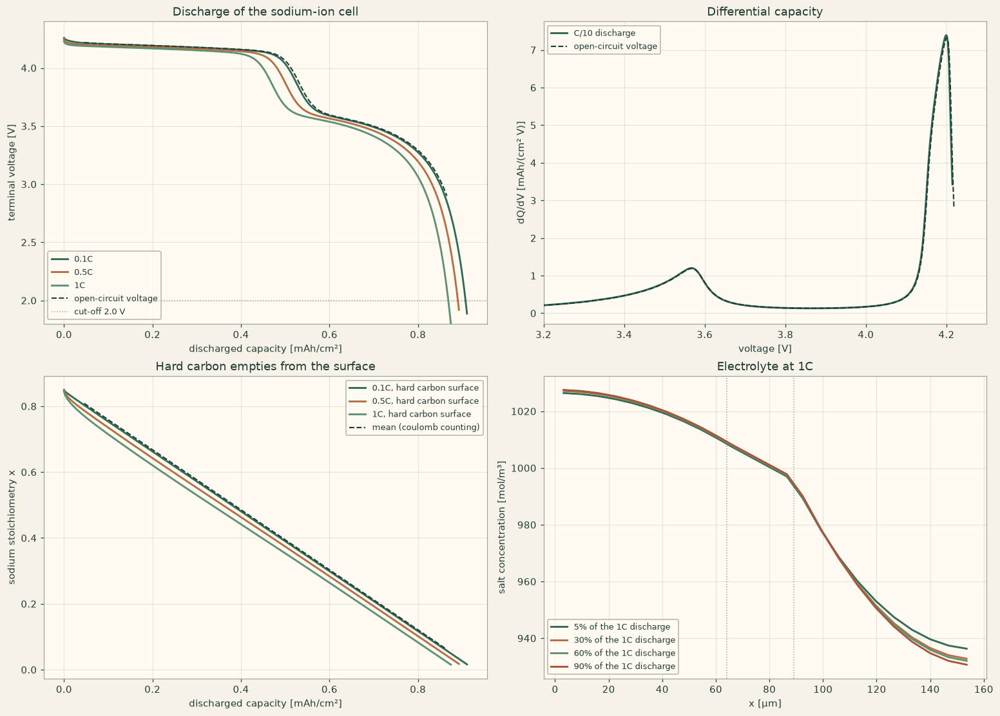

Docs › Examples › Isothermal sodium-ion cell in 1D
Electrochemistry · 1D
Isothermal sodium-ion cell in 1D
A hard carbon | Na3V2(PO4)2F3 sodium-ion cell with its sloping anode and two-plateau cathode, discharged at C/10, C/2 and 1C.

What it computes
OneSimulation solves the Doyle-Fuller-Newman porous-electrode model for Na+ ions through the cell thickness with spherical particles in both electrodes. Capacity, energy, differential capacity, particle depletion and the salt profile are compared with the stoichiometric window and the open-circuit curves of the electrodes.
What it checks
Sodium is conserved to 1e-10; at C/10 the cell delivers 99.6 % of the stoichiometric 0.911 mAh/cm² (97.7 % at C/2, 95.4 % at 1C) with a mean polarisation of 14 mV, the high-voltage plateau appears in dQ/dV at 4.199 V against 4.201 V from the open-circuit curves, and halving the mesh changes the 1C capacity by 0.09 %.
The notebook
The complete notebook, cell by cell. Run it to produce the figures and the comparison printout.
Sodium-ion cells work like lithium-ion cells: Na⁺ ions shuttle through a liquid electrolyte between a negative electrode that stores sodium, here hard carbon, and a positive host, here the polyanionic Na₃V₂(PO₄)₂F₃ (NVPF). The porous-electrode equations of Doyle, Fuller and Newman hold unchanged for the monovalent Na⁺ (equations in the lithium-ion discharge-rest-charge example): solid diffusion in spherical particles, salt diffusion and migration in the electrolyte, Ohm's law in both phases and Butler-Volmer kinetics.
The two electrodes give the cell its typical voltage curve. Hard carbon has a sloping region at low sodium content and a low-voltage plateau when filled; NVPF has two plateaus, near 4.2 V and 3.7 V, separated at two sodium ions per formula unit:
| electrode | stoichiometry at full / empty cell | open-circuit potential | |---|---|---| | hard carbon | \(x=0.85\) / \(x=0.02\) (2.0 V) | slope from about 1 V to 0.1 V, then plateau near 0.05 V | | NVPF | \(y=0.36\) / \(y\approx0.88\) | plateaus at 4.2 V (\(y<2/3\)) and 3.7 V (\(y>2/3\)) |
Reference. Model structure and electrode chemistry after K. Chayambuka, G. Mulder, D. L. Danilov and P. H. L. Notten, Adv. Energy Mater. 10 (2020) 2001310 and their physics-based sodium-ion model (2022); the parameters and open-circuit curves here are representative values of that cell type, not a fit. Checks: (i) sodium in particles and electrolyte is conserved; (ii) coulomb counting: the stoichiometric capacity of the hard carbon window equals the low-rate capacity; (iii) at C/10 the voltage follows the open-circuit voltage and its differential capacity \(dQ/dV\) shows the high-voltage plateau of NVPF at the voltage the open-circuit curves predict.
import numpy as np
from onesim.physics.chemistry import BatteryElectrodeLayer, BatteryElectrolyteLayer, PorousElectrodeBattery
from onesim.visualization import theme, plots
theme.set()Cell
1 M NaPF₆ in EC:PC with Bruggeman tortuosity (exponent 1.5).
faraday, x100, y100, x0 = 96485.33212, 0.85, 0.36, 0.02
hard_carbon = lambda x, T: 0.06 + 0.9 * np.exp(-9 * x) + 1.6 * np.exp(-35 * x) - 0.04 * x
nvpf = lambda y, T: (3.95 - 0.25 * np.tanh((y - 0.667) / 0.02) - 0.15 * (y - 0.667) + 0.4 * np.exp(-(y - 0.333) / 0.012)
- 1.2 * np.exp(-(1 - y) / 0.03))
negative = BatteryElectrodeLayer(thickness=64e-6, porosity=0.51, electrolyte_diffusivity=2.5e-10 * 0.51**1.5,
electrolyte_conductivity=0.8 * 0.51**1.5, particle_radius=3.5e-6, particle_diffusivity=5e-15,
active_fraction=0.44, maximum_concentration=14540, initial_stoichiometry=x100,
reference_exchange_current=1.0, electronic_conductivity=256, open_circuit_potential=hard_carbon)
positive = BatteryElectrodeLayer(thickness=68e-6, porosity=0.23, electrolyte_diffusivity=2.5e-10 * 0.23**1.5,
electrolyte_conductivity=0.8 * 0.23**1.5, particle_radius=0.6e-6, particle_diffusivity=1e-16,
active_fraction=0.62, maximum_concentration=15320, initial_stoichiometry=y100,
reference_exchange_current=0.5, electronic_conductivity=50, open_circuit_potential=nvpf)
separator = BatteryElectrolyteLayer(thickness=25e-6, porosity=0.55, electrolyte_diffusivity=2.5e-10 * 0.55**1.5,
electrolyte_conductivity=0.8 * 0.55**1.5)
cell = PorousElectrodeBattery(negative=negative, separator=separator, positive=positive, electrolyte_concentration=1000,
transference_number=0.45)
c_minus, c_plus = (faraday * layer.active_fraction * layer.thickness * layer.maximum_concentration for layer in (negative, positive))
capacity = c_minus * (x100 - x0)
open_circuit = lambda q: nvpf(y100 + q / c_plus, 0) - hard_carbon(x100 - q / c_minus, 0)
print(f"stoichiometric capacity of the hard carbon window {capacity / 3600 / 10:.4f} mAh/cm² (1C = {capacity / 3600 / 10:.3f} mA/cm²); "
f"the positive electrode is then at y = {y100 + capacity / c_plus:.3f}")Discharges
C/10, C/2 and 1C from the charged cell to a little past the 2.0 V cut-off (end time as a fraction of the nominal hour count); at 1C also on a coarser mesh.
rates = {0.1: 1.0, 0.5: 0.98, 1.0: 0.96}
runs = {rate: cell.solve(mode="DFN", current_density=rate * capacity / 3600, final_time=end * 3600 / rate, radial_cells=16,
through_cells=(10, 5, 10), output_times=np.linspace(0, end * 3600 / rate, 1200)) for rate, end in rates.items()}
coarse = cell.solve(mode="DFN", current_density=capacity / 3600, final_time=rates[1.0] * 3600, radial_cells=8, through_cells=(5, 3, 5),
output_times=np.linspace(0, rates[1.0] * 3600, 1200))Results
delivered = {rate: rate * capacity * run.times / 3600 for rate, run in runs.items()}
cutoff = {rate: np.interp(2.0, run.terminal_voltage[::-1], delivered[rate][::-1]) for rate, run in runs.items()}
coarse_cutoff = np.interp(2.0, coarse.terminal_voltage[::-1], delivered[1.0][::-1])
print(f"sodium inventory: largest relative drift {max(np.ptp(r.lithium_inventory) / r.lithium_inventory[0] for r in runs.values()):.1e}")
print("C-rate capacity to 2.0 V [mAh/cm²] of stoichiometric mean voltage [V] energy [mWh/cm²]")
for rate, run in runs.items():
keep = delivered[rate] <= cutoff[rate]
energy = np.trapezoid(run.terminal_voltage[keep], delivered[rate][keep])
print(f"{rate:6.1f} {cutoff[rate] / 36000:27.4f} {100 * cutoff[rate] / capacity:15.2f} % {energy / cutoff[rate]:16.4f} {energy / 36000:16.4f}")
print(f"1C on the coarse mesh (5, 3, 5 cells, 8 shells): {coarse_cutoff / 36000:.4f} mAh/cm², difference {100 * (coarse_cutoff / cutoff[1.0] - 1):+.2f} %")
slow, q = runs[0.1], delivered[0.1]
inside = (q > 0.05 * capacity) & (q < cutoff[0.1])
print(f"C/10: mean V - U_oc = {1e3 * np.mean(slow.terminal_voltage[inside] - open_circuit(q[inside])):+.1f} mV")
grid = np.linspace(0.05 * capacity, 0.95 * capacity, 1801)
peak_ocv = open_circuit(grid)[np.argmax(-np.gradient(grid, open_circuit(grid)))]
peak_sim = np.interp(grid, q, slow.terminal_voltage)[np.argmax(-np.gradient(grid, np.interp(grid, q, slow.terminal_voltage)))]
print(f"high-voltage NVPF plateau as dQ/dV peak: open-circuit {peak_ocv:.4f} V, C/10 discharge {peak_sim:.4f} V "
f"(polarisation {1e3 * (peak_ocv - peak_sim):.1f} mV)")
print("negative particle at 1C when the cell reaches 2.0 V: surface stoichiometry "
f"{np.interp(cutoff[1.0], delivered[1.0], runs[1.0].particle_surface_concentration[0].min(axis=1)) / negative.maximum_concentration:.3f}, "
f"mean {x100 - cutoff[1.0] / c_minus:.3f}")Figure
fig = plots.figure(2, 2, size=(14, 10))
plots.line(y={f"{rate:g}C": (delivered[rate] / 36000, run.terminal_voltage) for rate, run in runs.items()},
reference={"open-circuit voltage": (grid / 36000, open_circuit(grid))}, hlines={"cut-off 2.0 V": 2.0}, ylimits=(1.8, 4.4),
xlabel="discharged capacity [mAh/cm²]", ylabel="terminal voltage [V]", title="Discharge of the sodium-ion cell", legend="lower left", ax=fig[0])
plots.line(np.interp(grid, q, slow.terminal_voltage), {"C/10 discharge": -np.gradient(grid, np.interp(grid, q, slow.terminal_voltage)) / 36000},
reference={"open-circuit voltage": (open_circuit(grid), -np.gradient(grid, open_circuit(grid)) / 36000)}, xlimits=(3.2, 4.3),
xlabel="voltage [V]", ylabel="dQ/dV [mAh/(cm² V)]", title="Differential capacity", legend="upper left", ax=fig[1])
plots.line(y={f"{rate:g}C, hard carbon surface": (delivered[rate] / 36000, run.particle_surface_concentration[0].min(axis=1) / negative.maximum_concentration)
for rate, run in runs.items()}, reference={"mean (coulomb counting)": (grid / 36000, x100 - grid / c_minus)},
xlabel="discharged capacity [mAh/cm²]", ylabel="sodium stoichiometry x", title="Hard carbon empties from the surface",
legend="upper right", ax=fig[2])
plots.line(1e6 * runs[1.0].electrolyte_positions, {f"{f:.0%} of the 1C discharge": runs[1.0].electrolyte_concentration[int(f * 1199)]
for f in (0.05, 0.3, 0.6, 0.9)},
vlines=[1e6 * negative.thickness, 1e6 * (negative.thickness + separator.thickness)], xlabel="x [µm]",
ylabel="salt concentration [mol/m³]", title="Electrolyte at 1C", legend="lower left", ax=fig[3])
plots.show()Going further
Replace the representative curves by measured half-cell data, add a sodium-plating check on the hard-carbon plateau during fast charge, or compare with the lithium-ion cell of the rate-capability example at the same current per area.